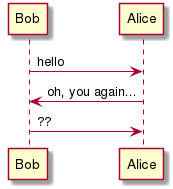
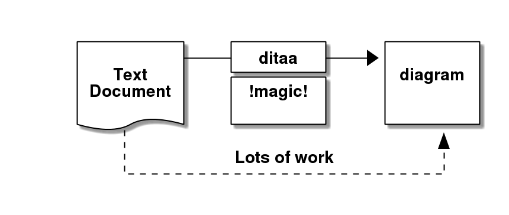
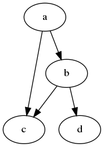

create sleek slide decks using markdown only
arne@hilmann.de | 2017-11
the whole deck in one markdown file
on-the-fly rendering of asciiart (ditaa, plantuml, graphviz)
sleek ui, based on reveal.js
on-the-fly reload when changing sources


